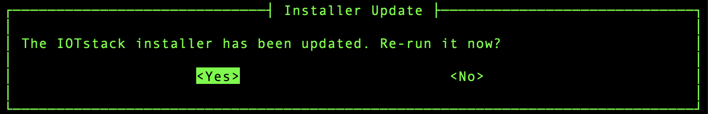
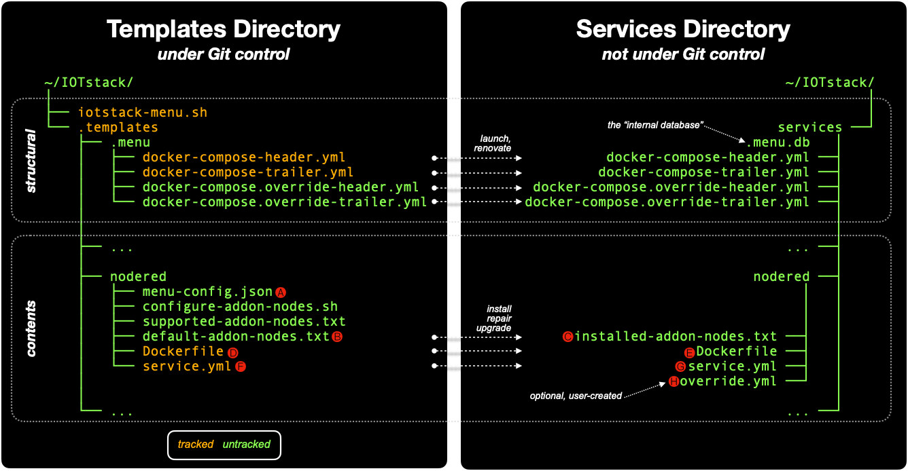
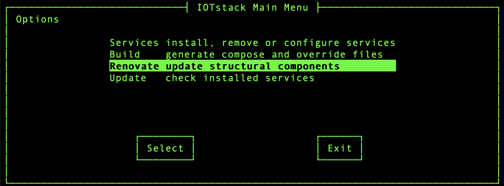
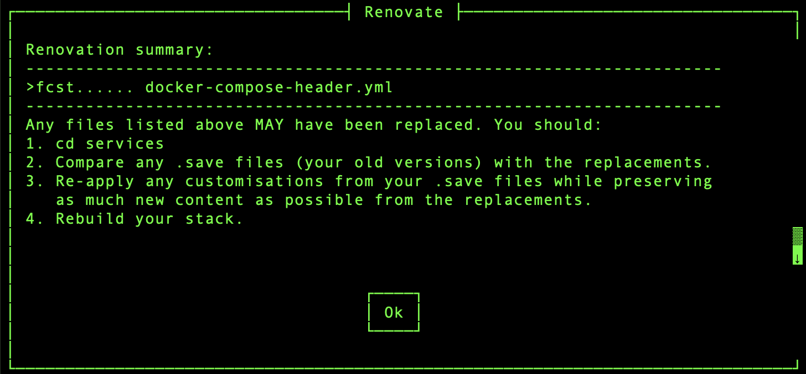
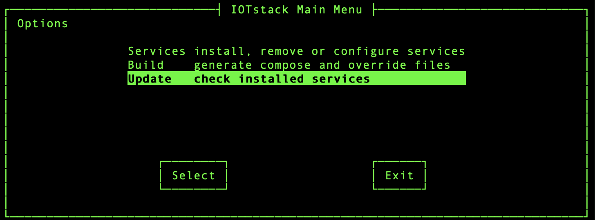
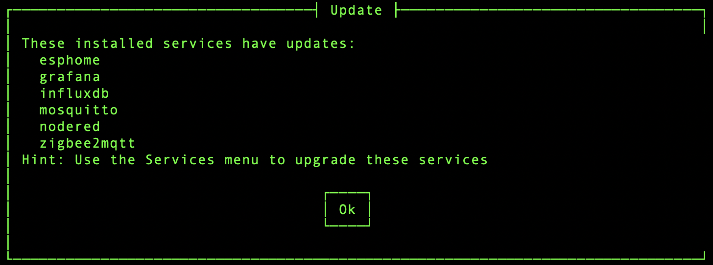
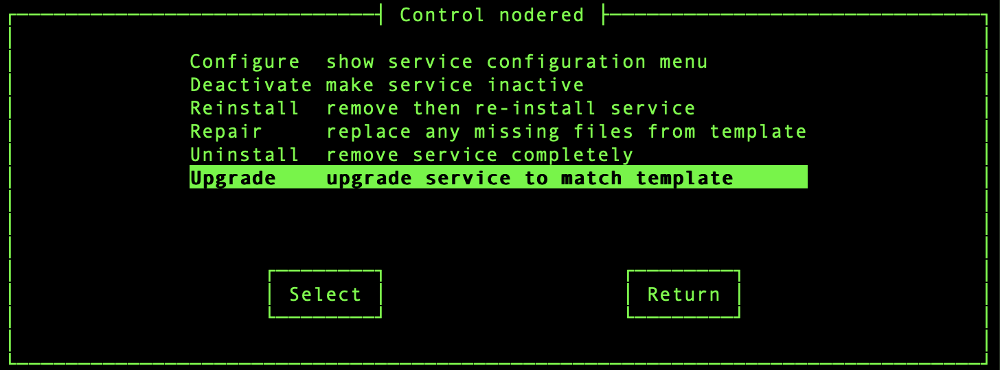
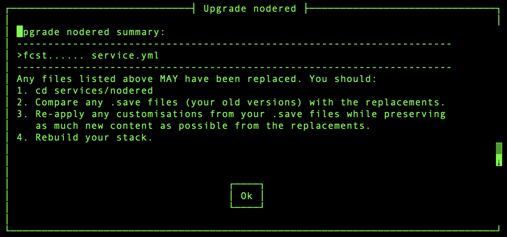

Stack maintenance¶
Your stack is constructed from two primary sources:
- the IOTstack project on github.com; and
- Docker image registries, such as hub.docker.com.
Initial stack creation is straightforward because all the Docker-related steps are handled automatically. Thereafter, the menu adopts a philosophy of leaving you in control. It does not force you to update anything. It may remind you that something needs to be done but, in general, lets you proceed at your own pace, which means you need to perform the various steps explicitly.
operating system¶
You should keep your host's operating system up-to-date. Despite the word "container" suggesting that containers are fully self-contained, they sometimes depend on operating system components.
$ sudo apt update
$ sudo apt upgrade -y
$ sudo apt autoremove -y
GitHub¶
If you want to check whether the master version of IOTstack on GitHub has changed, run:
$ cd ~/IOTstack
$ git fetch
$ git status
If the response to the status command says "Your branch is behind" by some number of commits then, providing it is convenient for you to do so, you can synchronise your local clone with GitHub by running:
$ cd ~/IOTstack
$ git pull
IOTstack installer¶
On each launch, the menu checks whether the installer script should be re-run. In general, this will only happen after an initial installation or following a git pull.
As well as setting up the basic scaffolding for Docker, the installer script is the primary delivery vehicle for ensuring dependencies are in place so, as a general statement, it is prudent to let the installer run when necessary.
In menu mode, the menu will offer you a choice:
| Figure 1: Installer Update menu |
|---|
 |
In command-line mode, a reminder message is written to stderr:
Warning: /home/pi/IOTstack/install.sh needs to be re-run.
To run the installer by hand:
$ cd ~/IOTstack
$ ./install.sh
Note:
- The installer can only do so much. In particular, if you have fairly ancient installations of Docker and/or docker compose, you might need to use some brute force. You may find it helpful to read Maintaining docker + docker compose which is part of PiBuilder.
Tip:
-
If you have a good reason for not wanting to run the installer, you can silence the reminders like this:
$ ./install.sh version >.new_installThis fakes your system into believing that the updated version of the installer has already run.
internal database¶
The menu reloads its internal database automatically when either of the following is true:
- The internal database does not exist; or
- The commit ID of the templates directory changes.
Those events cover the following use-cases:
- When you clone IOTstack for the first time;
- When you have an existing IOTstack but use
iotstack-menu.shfor the first time; and - When you have done a
git pull, which has caused a change somewhere in the templates directory.
You can also reload the internal database manually by running:
$ cd ~/IOTstack
$ ./iotstack-menu.sh reload
See also Internal Database.
structure vs contents¶
Think of a house. You have the building's structure and the contents within. The menu makes similar distinctions:
-
The structural components are the items grouped in the upper part of Figure 2:
- the menu script itself;
- the
.templatesdirectory (as distinct from the sub-directories and files contained within it); and - the header and trailer files which are copied from the templates directory into the top level of the services directory.
-
The contents components are the files that define the services you install. Installation of a service involves copying one or more files from the service's template into the service's sub-directory of the services directory. The lower part of Figure 2 uses Node-RED as its example where three files are copied when that service is installed.
| Figure 2: File structures |
|---|
 |
If you need to do some work on the structure of your home, you usually talk about renovations. If an item of contents needs some work, you typically talk in terms of repairs or replacing the old item with a newer model (ie an upgrade). The menu adopts the same terminology. If a change from GitHub that needs to be propagated into your working stack affects:
-
a structural component, the relevant concept is renovate.
-
a contents (service) component, the relevant concept is upgrade.
The menu distinguishes between structure and contents to minimise risk. Although renovate and upgrade serve similar purposes (propagating changes made on GitHub into your working stack), changes to structural components affect your whole stack so there's a greater chance of a foul-up than there is if you're only upgrading a service.
tracked files¶
A file is said to be tracked if its Git commit ID is recorded in the menu's internal database at the time when the menu makes a copy of that file. Figure 2 summarises which files are tracked.
If a tracked file's Git commit ID changes subsequently, it signals that the content of the original file has changed, and it implies that the copy of the file made by the menu when the commit ID was recorded is now out of date.
The reason the menu makes copies of files (typically by copying from the templates directory into the services directory) is so that the destination copies (which are not under Git control) can be customised, by you, without affecting the originals (which are under Git control). It follows that, while a copy always starts out being identical to its original, it does not necessarily stay that way.
When you tell the menu to "Renovate" the header/footer structural components or "Upgrade" a service, the menu only considers tracked files. If the newly-updated version of a tracked file differs from an existing file, the existing file is renamed with a .save extension before the updated version is installed. This gives you the opportunity to compare the old and new files, and decide whether it is necessary to re-apply any customisations.
Developer guide references:
- The components table records Git commit IDs for structural files;
- The tracking table records Git commit IDs for services ("contents") files while the
"install":array in each service'smenu-config.jsondefines which files are tracked.
renovation¶
On first launch, the menu copies the four header and trailer files shown in Figure 2 into your services directory. On subsequent launches, those four files are replaced if they go missing but they are never normally overwritten.
The first two files in the list are tracked. If the master version of one of those files changes, the menu will propose a renovation. In menu mode, the menu signals that a renovation is needed by adding the "Renovate" option to the Main menu:
| Figure 3: Main menu – Renovate command |
|---|
 |
In command-line mode, the menu displays:
Warning: headers/footers need renovation. Recommend running:
./iotstack-menu.sh renovate
then compare any .save files (your versions) with newer
replacements, and re-apply your customisations.
This includes a hint for the command you should run:
$ cd ~/IOTstack
$ ./iotstack-menu.sh renovate
Choosing either approach will trigger the renovation. The menu will only replace a structural file if it differs from the master version, in which case the older file will be renamed with a .save extension. The menu summarises its activities like this:
| Figure 4: Renovation Summary |
|---|
 |
In this example, the ">fc" rsync flags indicate that the header file has been replaced so you can infer the existence of a .save file. To answer the question "what did the renovation change?" you can (and probably should):
$ cd ~/IOTstack/services
$ diff -y docker-compose-header.yml.save docker-compose-header.yml
This produces a side-by-side display which makes it relatively easy to see if any of your customisations (from the .save file) need to be re-applied to the replacement file.
services¶
Please refer back to Figure 2 and assume you have installed Node-RED.
When you ask the menu to install a service, the installation process fetches the .install array from the service's menu-config.json 🅐. In the case of Node-RED, that array contains:
$ jq -c <.templates/nodered/menu-config.json .install
[
{"template":"default-addon-nodes.txt","service":"installed-addon-nodes.txt","tracked":false},
{"template":"Dockerfile","service":"Dockerfile","tracked":true},
{"template":"service.yml","service":"service.yml","tracked":true}
]
That tells the menu to copy three files:
default-addon-nodes.txt🅑 toinstalled-addon-nodes.txt🅒 (an implied rename);Dockerfilefrom 🅓 to 🅔; andservice.ymlfrom 🅕 to 🅖.
Most services only need service.yml to be copied. Node-RED is a fairly special case being used in this example because it copies multiple tracked and untracked files.
The value of true for the tracked keyword tells the menu to note the Git commit IDs of 🅓 and 🅕 at the time the copies are made.
If you need to customise Node-RED, you can:
- Edit
service.yml🅖; or - Create then edit
override.yml🅗; or - Do both.
Now, let's suppose 🅓 and/or 🅕 change on GitHub. Sometime later, you follow the steps in synchronise with GitHub. Among other things, the Git commit IDs of 🅓 and/or 🅕 in your local clone of IOTstack will change. Any change of a commit ID for a tracked file causes the menu to conclude that the service has "changed" and is a candidate for being upgraded.
update check¶
To check if any of your installed services are candidates for upgrading:
-
Either launch the menu and choose the "Update" command:
Figure 5: Main menu – Update command 
-
Or run:
$ cd ~/IOTstack $ ./iotstack-menu update
If no services are candidates for upgrading, the menu will report:
All installed services are up-to-date!
Otherwise any services that can be upgraded will be listed:
| Figure 6: Update summary |
|---|
 |
If you're wondering why the Services menu doesn't contain some indication of the upgradability of all services, it is because it is a relatively expensive operation. Checking every installed service every time the Services menu is rebuilt imposes an unacceptable performance penalty, particularly on low-end systems. That's why a separate "Update" command is provided in the Main menu.
upgrade service¶
If the response from the "Update" command suggests that a service has changed, you can upgrade it. For example, if Node-RED has changed, you can upgrade it by either by:
-
In menu mode:
- Choose "Services" from the Main menu;
- Choose "nodered" in the Services menu;
- Choose the "Upgrade" command:
Figure 7: Upgrade Node-RED – command 
-
In command line mode:
$ cd ~/IOTstack $ ./iotstack-menu upgrade nodered
During an upgrade, all tracked files (🅓 and 🅕) are compared with their installed counterparts (🅔 and 🅖). If the upgraded version of a tracked file differs from its existing counterpart then the existing file will be saved with a .save extension before the upgraded version is copied into place.
For example, if 🅕; differed from 🅖 then the menu would display:
| Figure 8: Upgrade Node-RED – summary |
|---|
 |
To see exactly what changes from GitHub were brought in during the update, you could run:
$ cd ~/IOTstack/services/nodered
$ diff -y service.yml.save service.yml
The diff -y command gives a side-by-side view of changes. If you have customised the older version, you can re-apply the changes to the newer version (or move your customisations to an override.yml file).
If you never changed 🅖 then it is probably safe to accept the new version of 🅕 replacing 🅖 "as is". Conversely, if you did change 🅖 then there's a solid risk that simply accepting the new version of 🅕 will lose your customisations. This latter situation is why override.yml files are the preferred approach.
images and containers¶
Running containers are instantiated from images. IOTstack supports two kinds of images:
-
a base image: The container is instantiated from an image that is downloaded from DockerHub or another repository, and is used "as is".
-
a local image: A base image is downloaded from DockerHub or another repository, and then a local
Dockerfileis run to customise that base image to produce a local image. The local image is used to instantiate the container.
There are two easy ways to work out whether a container is instantiated from a base or local image:
-
Inspect its service definition (
service.yml). If it contains animage:clause then the container is using a base image, whereas the presence of abuild:clause is the signature of a container using a local image. Here are two examples:-
Grafana is instantiated from a base image:
$ cd ~/IOTstack $ docker compose config grafana | grep -e "image:" -e "build:" image: grafana/grafana -
Moquitto is instantiated from a local image:
$ cd ~/IOTstack $ docker compose config mosquitto | grep -e "image:" -e "build:" build:
-
-
Use docker's
imagescommand:$ docker images IMAGE ID DISK USAGE grafana/grafana:latest f8a787bf1600 1.01GB influxdb:1.12 03b8de319bf5 311MB iotstack-mosquitto:latest 2259353e98bd 27.1MB iotstack-nodered:latest bbfad5db4f91 759MBIf the image name is prefixed with
iotstack-then the image is a local image; otherwise it is a base image. In the above, Grafana and InfluxDB are base images while Mosquitto and Node-RED are local images.
maintaining base images¶
To maintain containers instantiated from base images:
$ cd ~/IOTstack
$ docker compose pull { «container» ... }
$ docker compose up -d { «container» ... }
$ docker system prune -f
The IOTstackAliases equivalents are:
$ PULL { «container» ... }
$ UP { «container» ... }
$ PRUNE
Irrespective of whether you use the commands or aliases, if you omit the «container» arguments then all base images are pulled and instantiated. The prune command cleans up the old images.
maintaining local images¶
When it comes to maintaining containers instantiated from local images, there are two scenarios to consider:
-
You have made a change to one of the inputs into the
Dockerfileprocess. At the time of writing, only two containers are candidates for this:- Node-RED; and
- RTL433
In the case of Node-RED,
installed-addon-nodes.txtholds the list of add-on nodes and typically changes when you use the menu's "Configuration" command. For RTL433, you might edit theDockerfileto install additional packages.Using Node-RED as the example, to apply local changes you run:
$ cd ~/IOTstack $ docker compose up --build -d nodered $ docker system prune -fThe IOTstackAliases equivalents are:
$ BUILD nodered $ PRUNE -
You become aware of a later release of the base image which underpins the local image, so you want to construct a new local image. Using Mosquitto as the example, you run:
$ cd ~/IOTstack $ docker compose build --no-cache --pull mosquitto $ docker compose up -d mosquitto $ docker system prune -fThe IOTstackAliases equivalents are:
$ REBUILD mosquitto $ UP mosquitto $ PRUNE